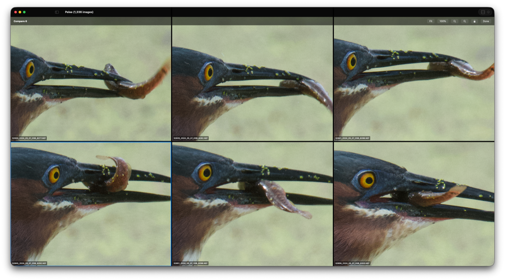
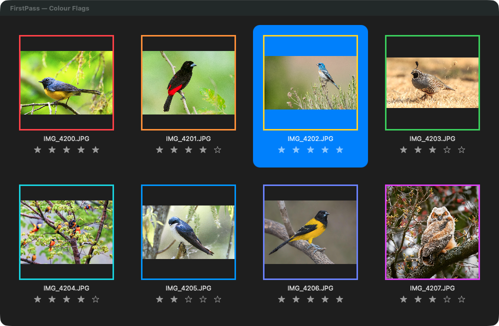
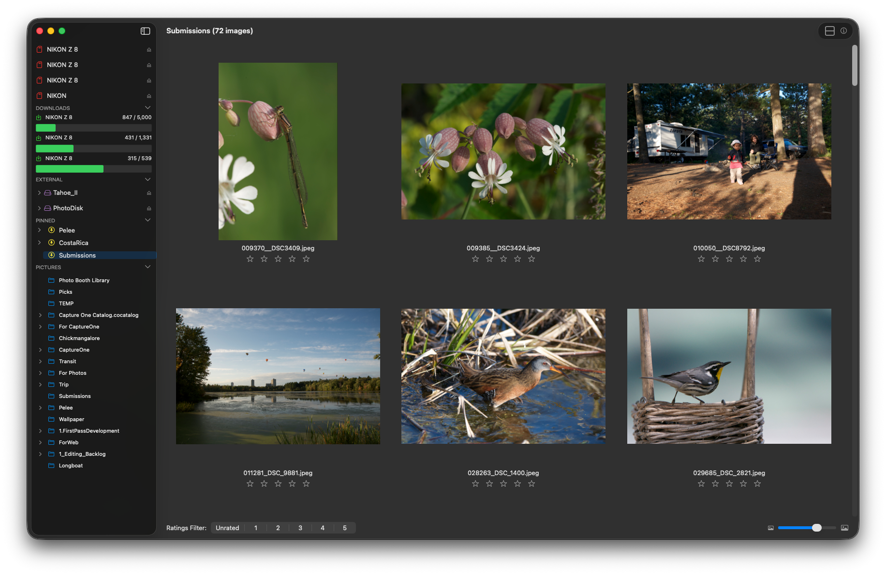
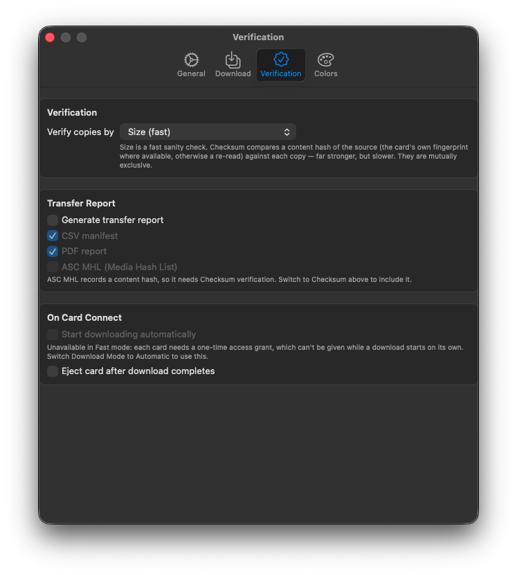
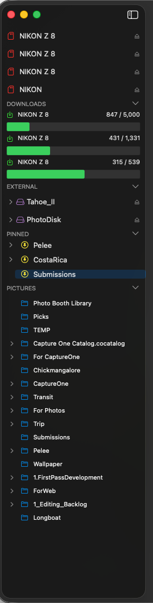

FirstPass
RAW Ingest & Cull
Get your shoot off the card, verified, and cut down to the keepers — written by a photographer for photographers. Buy once, works offline, native on Apple silicon.

Core Features
Checksum-verified copying — every file confirmed against the card before it is released
Transfer reports as CSV, PDF and ASC MHL manifests — the film industry’s standard proof that every frame arrived intact
Export re-encoded and everything comes with it — EXIF, capture date, camera and GPS, plus the star rating as XMP for Lightroom, Bridge and Photo Mechanic
Fast card ingest that copies straight off a mounted card, with PTP for any camera
Download from several cards or cameras to multiple destinations at once
Files sorted into folders by capture date, camera make and model
Fast, uncluttered “first pass” culling — rate, colour-flag and delete
Compare similar frames with synchronised zoom and pan
0–5 star ratings, nine colour flags and instant rating filters — shown in every open window at once
Bulk renaming with date and auto-sequence tokens
Asks before moving or deleting a large number of photographs — you set the number
Native Apple silicon, one-time purchase, and your photographs never leave your Mac
What FirstPass Does
FirstPass provides a practical, no-clutter workflow for importing and organising photos straight off your camera or card. It keeps the interface clean while surfacing the information that matters: exposure data, histograms, ratings, colour flags, and folder structure.
Copy it safely:
Checksum verification compares a content hash of the source against every copy written, per file, before the card is released — Finder copies and assumes success
Transfer reports as CSV manifests, PDF summaries and ASC MHL sidecars, for jobs that need a paper trail. ASC MHL is the Media Hash List format the American Society of Cinematographers publishes for exactly this: handing footage to someone else with a verifiable record that every file arrived intact. If a production asks for a manifest with the cards, this is what they mean
Two destinations in the same pass, so a backup exists before the card leaves the reader
Files that fail verification are re-copied automatically, and anything still failing is reported rather than counted as a success
Fast ingest reads a mounted card directly; cameras that speak PTP use the standard path automatically
Organise it as it lands:
Folders built from each file’s own capture date, camera make and model
Bulk renaming with date, sequence, camera and original-name tokens
Automatic download from several cards or cameras at once
Cut it down to the keepers:
0–5 star ratings and nine colour flags, with instant rating filters
Compare similar frames side-by-side with synchronised zoom and pan
Histogram and image information inspector
Browse a folder and its sub-folders together
Keyboard and click multi-selection for fast culling
Sort by capture date, name or rating
Finder integration, drag-and-drop, and open-with an external editor
Trackpad gesture navigation

Several cards at once
A shoot rarely comes back on one card. FirstPass copies from as many as you can attach, at the same time, and you do not have to sit and feed the reader.
Each card has its own progress and its own Cancel. Starting a second card never describes or stops the first, and stopping one leaves the others running.
Copying does not hold the window. Browse, rate and compare while the cards are still coming in — including in the folder the images are landing in.
Progress stays in the sidebar under Downloads, so it is visible from wherever you have browsed to.
Every copy is still verified, on every card, and each job leaves its own transfer report.

For production and DIT work
If you are handing footage or stills on to someone else, the question is not whether the copy finished — it is whether you can prove it. FirstPass verifies every file against the card before the card is released, and writes the record to go with it.
ASC MHL sidecars — the Media Hash List format published by the American Society of Cinematographers, and what a production means when it asks for a manifest with the cards
CSV manifests with one row per copy: source, destination, size and verification result
PDF reports of the same, for the paperwork that travels with a delivery
Two destinations written in the same pass, so a backup exists before the card leaves the reader
Failures re-copied automatically, and anything still failing reported rather than counted as a success

Your photographs, wherever they live
FirstPass browses where your work actually is, rather than expecting it in one place. That is mostly a 1.7.2 change.
External disks have their own section in the sidebar. Expand a drive to its folders and work straight from it — rate, flag, compare, export — with an Eject button on the row. A disk being written to cannot be ejected out from under a copy.
Choose where the tree is rooted. Pictures is the default, not a requirement. Point FirstPass at any folder, including one on an external disk, and the sidebar is rooted there and named after it. The permission survives a relaunch, and a root that has gone missing falls back to Pictures with a reason shown rather than silently.
Pin the folders you keep returning to. One click each, in whatever order you drag them into, and a pin on an external disk comes back when the disk does. A pinned folder and the same folder in the tree stay independent, so opening one does not disturb the other.
Collapse the sections you are not using — cards, downloads, disks, pins — so the sidebar shows what you are actually working with.

Release history
1.7.2 (2026) — large RAW folders open without stalling and thumbnails no longer stop part-way; the thumbnail cache is sized to your Mac’s memory; failed downloads are reported rather than passing in silence; each card copies on its own and keeps going while you browse; compare up to 16 frames; ratings appear in every open window; and moving or deleting a lot of photographs asks first
1.7.1 (2026) — verified copying with size or full-checksum comparison, CSV, PDF and ASC MHL transfer reports, Fast card ingest, and files sorted by their own capture date, camera make and model
1.7 (2026) — compare similar frames with synchronised zoom and pan, uniform landscape gallery grid, faster RAW loading through embedded previews
1.6.1 (2024) — image zoom and scrolling, gallery stability
1.6 (2024) — rebuilt on SwiftUI and Swift, native on Apple silicon
1.5.8 (2021) — the last release of the original version
Requirements & Availability
Current release: version 1.7.2 on the Mac App Store
Latest update: external disks and pinned folders in the sidebar, a browse folder of your choosing, large-folder performance, downloads that report their failures, and a confirmation before large moves and deletes
Requires macOS 14.6 or later
Universal on Apple silicon and Intel Macs
One-time purchase — no subscription
Works offline — your images are never uploaded and are never used to train anything
$39.99 once — US pricing; Apple sets the price in other regions.